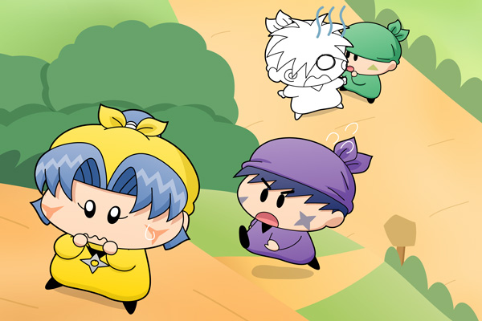

ヤシチ「お前たち、昨日言ったように今日はピクニックの修行をするぞ」
サスケ「わ～～いだぜ！」
ハンゾー「おやつも持ってきたのら～」
ヤシチ「おっとおやつは一人３００円までだからな。
ちなみにかりんとうはおやつには含まれないのだ！」
ヤマネ（嫌み、嫌み・・・）
サスケ「さっきからぶつぶつとどうしたんだぜ？ヤマネ？」
ヤマネ「はっ、何でもございませぬ・・。
私たちも先を急ぐでございます、サスケ先輩！」
サスケ「お、おうだぜ！」
１時間くらい歩いたところでヤシチがみんなの方へ振り返りました。
ヤシチ「よ～し、ちょっと休憩でもするか」
ヤマネ「あの、ヤシチ兄様？ ピクニックの修行とはいったいどのような
修行なのでございましょう？」
ヤシチ「もう修行は始まっているぞ。こうして大自然を感じながら
森のような広くて深い心を持ち続ける・・。
これは妖精忍者にとって大切なことなのだぞ」
ヤマネ「そ・・それ・・・あそ・・・」
ヤシチ「ん？どうしたヤマネ？」

急にヤマネの表情が引き締まり、口調が荒くなりました。
ヤマネ「いいえ！それはただ遊んでいるだけなのでございますっ！
こうしている間にもネズミ兄様は日々厳しい忍術修行を積み、
ヤシチ兄様との実力は開いていくばかり・・」
ヤシチ「ど、どうしたのだ急に」
ヤマネ「だいたいヤシチ兄様はいつも修行と称して釣りやお絵描きばっかり
でございませぬか！
それだからネズミ兄様に妖精忍者の素質が無いと言われても
反論できないでございます！」
言うべきことを言い切ったヤマネは、その場から逃げるように全力で走り出しました。
サスケ「ヤマネ～～」
自分の名前を呼ぶサスケの声にヤマネは我に返り、おそるおそる後ろを振り返りました。ヤマネの視線に入ってきたのは・・・ヤマネの思い描いていた期待に反して、頭を真っ白にしてただ呆然と立ち尽くしているヤシチの姿でした。
ヤマネ「ヤシチ兄様・・・」
久々の更新なのに、誰もが想像可能なお約束的展開で申し訳ないです。ヤマネは加減というものがよくわかっていないから、嫌みを言う際も兄と同じくらい強力な嫌みを言い放つ可能性が高そうですね。逆にヤシチはヤシチで打たれ弱いから、前回のネズミのアドバイスはこの二人には的外れということで。後の展開のために、もう少しだけお約束ストーリーが続きます・・・どうかご勘弁を…。
今回は見下ろし視線で描いてみました。やはり遠近感がうまく出せていませんね(^^;。背景の色合いはいつも試行錯誤しますが、今回は特に時間がかかりました。山道のくねくね道をショートカットできる急な小道をヤマネが駆け上ったようなシーンを想像してくださいませ。それと、ハンゾーの動かし方が私には難しくて、今回もハンゾーのセリフが少なめになってしまいました。。
(2009/9/14)